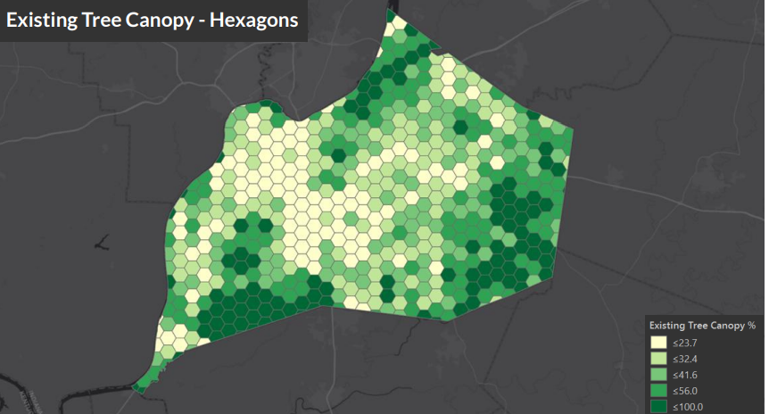
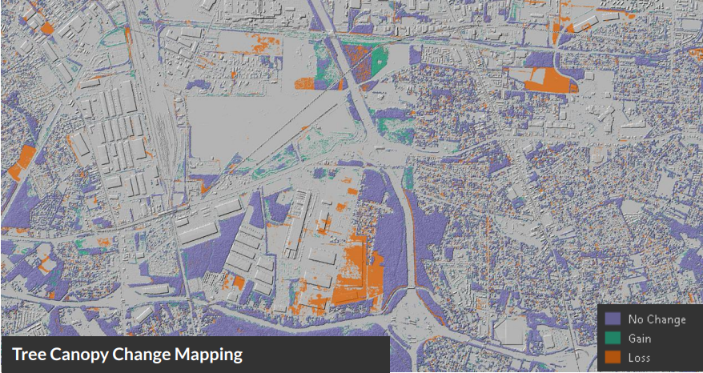
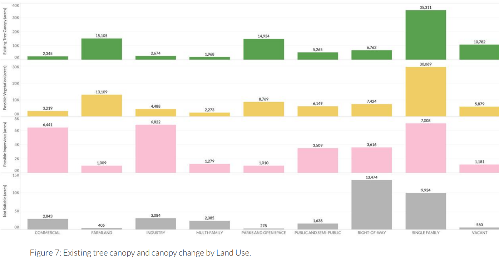
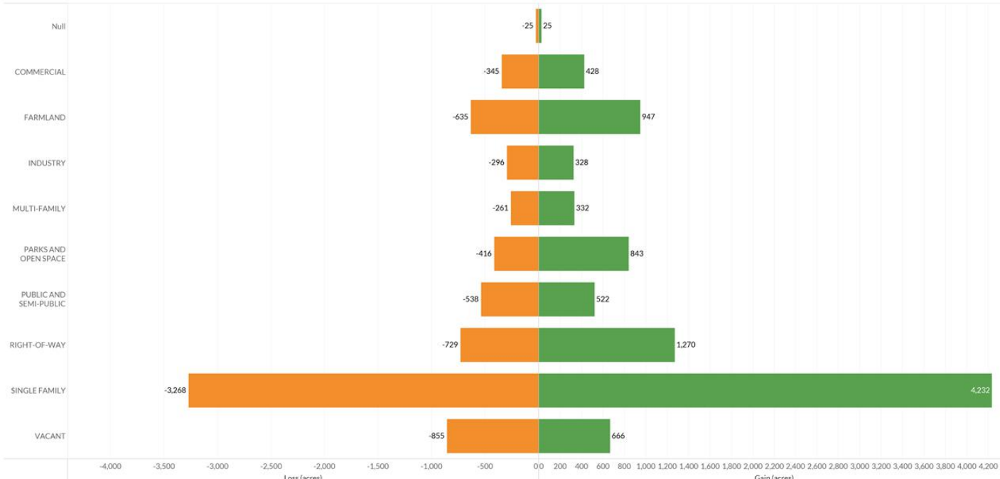
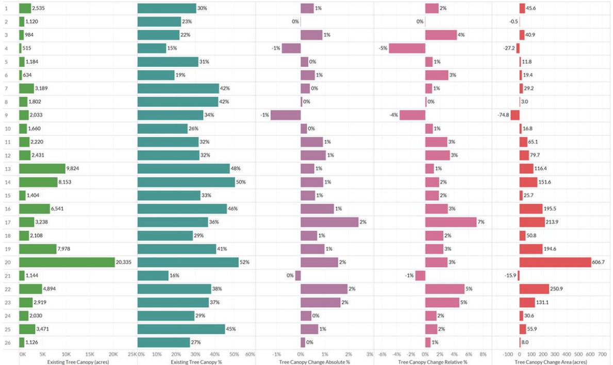
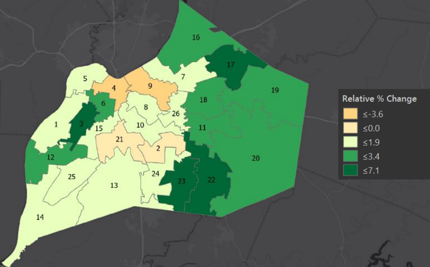

5 Environment
TOC
Misc
Metrics
- Existing Tree Canopy: The amount of urban tree canopy present when viewed from above using aerial or satellite imagery. - ETC % = tree canopy / land area
- Possible Tree Canopy - Vegetated: Grass or shrub area that is theoretically available for the establishment of tree canopy. - e.g. residential areas
- Possible Tree Canopy - Impervious: Asphalt, concrete or bare soil surfaces, excluding roads and buildings, that are theoretically available for the establishment of tree canopy without having to remove paved surfaces - e.g. any areas with no trees, buildings, roads, or bodies of water - Possible-Vegetation category should serve as a guide for further analysis, not a prescription of where to plant trees since other factors, such as land use, social, and financial (e.g. golf courses, agricultural and recreational fields), are involved.
- Not Suitable: Areas where it is highly unlikely that new tree canopy could be established (primarily buildings and roads).
- relative tree canopy change - change of tree canopy over a period of time - e.g (for 1 hexagon) relative tree canopy change % = (tree_canopy_area_2019 - tree_canopy_area_2012) / tree_canopy_area_2012 - Acre gain per
- Canopy height - proxy for tree age - Steps - Segment tree canopy into polygons approximating individual trees - Attribute each polygon with a height from both the starting date to end date (e.g. 2012 and 2019 ) LiDAR data - Interpretation example - trees in the 0-60 foot height class experienced gain, while there was minimal gain in the other taller height classes. - Therefore, many new trees planted and canopy expanding on existing trees. - Diverse height structure corresponds to a healthy and diverse tree age distribution - Very mature trees in the 130 height class points to the height potential for certain tree species provided the right conditions
Notes from Lousiville Tree Canopy Assessment 2012-2019
- Tree benefit: reducing stormwater runoff near streets and decreasing the urban heat island effect
- Above surface factors such as sidewalks to utilities can affect the suitability of a site for tree planting.
- Important to preserve trees in the 10-50 foot height range, so they can grow into the 60+ foot range while planting a variety of new trees to continue the lifecycle
- Losses are generally easier to detect than gains as losses tend to be due to a large event, such as tree removal, whereas gains are incremental growth or new tree plantings, both of which are smallerin size
- Factors that can affect change in tree canopy - Natural - Invasive species - Natural disasters such as storms - Climate change may cause trees to grow more quickly but could also result in inhospitable conditions for native species - Anthropogenic - Preservation and conservation efforts, the strength of tree ordinances, and the impacts of new development - Tree removal due to homeowner preferences and not being replaced by new trees - Proximity to roads: Regular salting, compaction, limited space, clearance pruning, and plow collisions
- Data sources - LiDAR - features distinguished by their spectral (color) properties - trees and shrubs can appear spectrally similar or obscured by shadow, LiDAR, which consists of 3D height information enhances the accuracy of the mapping - resolution of 30-meters - “LiDAR datasets were acquired under leaf-off conditions and thus tend to underestimate tree canopy slightly” (i.e. Fall or Winter?) - LiDAR and imagery datasets are not directly comparable due to differences in the sensor, time of acquisition, and processing techniques employed. - Resources: - Paper summarizing their tree canapy mapping approach - Getting to Land Use/Land Cover - Threshold Classification in eCognition - Object-based approach to LiDAR
- %
using 500-acre hexagons
 - Use LiDAR Hill shade map with % canopy change to highlight local areas
 - Land Use Categories - Overall: residential, commercial, and recreational - Metric change by category | acres lost (orange)/gained (green) by category

 - Change per Council District (by metric)

